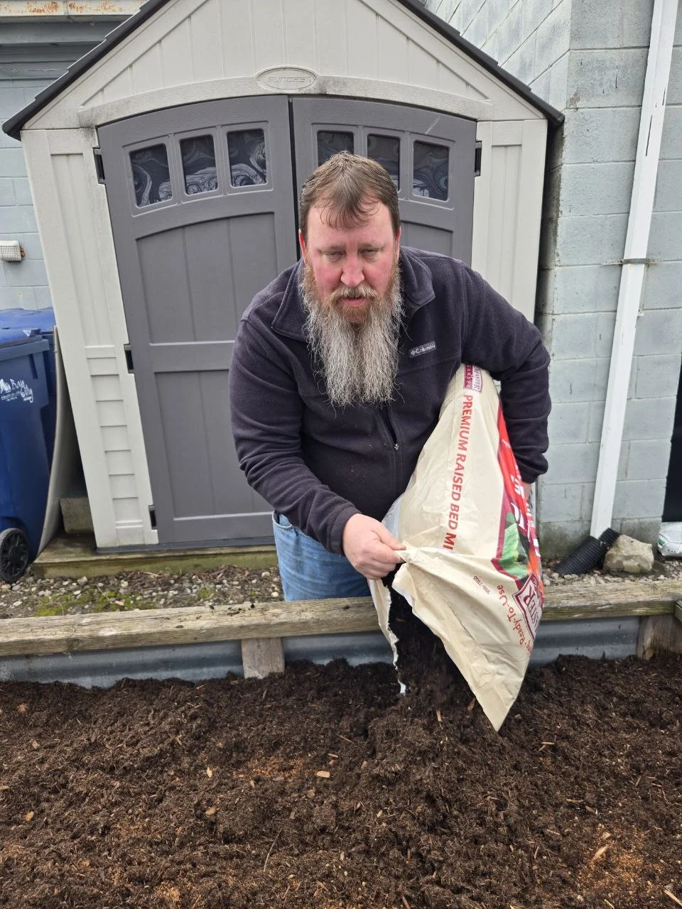

Quiet Backyard Living / Garden Help
Start with what’s growing.
Find a crop, plan a bed, or go straight to the pest-help section. The tools lead into the same QBL library.
Browse the whole library
Make a plan that fits your space.
Watering, soil and herbs
A Simple Olla Watering Pot for Short Trips
Last year our raised beds struggled because we left for the cabin for a few days at a time and came home to dry, stressed plants. This year we are trying simple terracotta ollas to see if they can help hold things together while we are gone.
Open this pageA Simple Worm Tube to Feed Your Raised Bed from the Inside Out
A simple in-bed worm composting tube gives your raised bed a place to take in kitchen scraps, build worm activity, and slowly feed the soil over time without making gardening more complicated.
Open this pageBest Herbs for Beginners, If You Want Herbs That Are Easy to Grow and Actually Useful
If you are brand new to herbs, the goal is not to grow the fanciest collection. It is to start with herbs that forgive mistakes, give you quick wins, and actually get used in real life. These are the herbs I would start with if you want the easiest path into g
Open this pagePests & crop problems
1 pagesNatural Pest Deterrents That Actually Make Sense
Simple backyard garden protection ideas that feel practical, not weird, and do not depend on turning everything into a spray bottle experiment.
Open this pageTools & finding a crop
3 pagesBuild My Garden Plan
Tell us how much space you have and what you actually like to eat, and we’ll sketch out a simple beginner-friendly garden plan with spacing, companions, herbs, and pollinator helpers.
Open this pageProtect My Veggie
A quicker way to find crop-specific pest help without digging through a giant article first.
Open this pageWhat to Grow Near the Vegetables You Actually Like to Eat
A simpler way to think about companion planting: start with what you want to grow, then build a little support crew around it.
Open this pageVegetable & crop guides
63 pagesOpen the complete alphabetical collection
What to Grow Near Artichokes
Artichokes are more of a statement plant than a tucked-in little filler, so nearby crops need to respect their size and space.
Open this pageWhat to Grow Near Arugula
Arugula usually does best with the same kind of gentler cooler-season logic that helps lettuce and spinach.
Open this pageWhat to Grow Near Asparagus
Asparagus is more of a long-term commitment bed, so nearby plant choices should respect that permanence.
Open this pageWhat to Grow Near Beets
Beets are one of the easier root crops to mix into a practical garden bed, especially if the neighboring plants do not crowd the row or make root harvest annoying. The best companions are usually the ones that share the space calmly and let the beet row stay t
Open this pageWhat to Grow Near Bok Choy
Bok choy usually likes the same calmer cooler-season logic that helps a lot of tender leafy crops do better.
Open this pageWhat to Grow Near Broccoli
Broccoli usually does better with a few thoughtful neighbors around it, especially ones that help keep the bed mixed, inspectable, and not overloaded with more bulky brassicas than it can handle. The best companions are often the ones that support airflow, har
Open this pageWhat to Grow Near Brussels Sprouts
Long-season crops hide problems if the bed gets too dense.
Open this pageWhat to Grow Near Cabbage
Cabbage does best with neighbors that help keep the bed mixed, manageable, and less inviting as one giant brassica buffet. The best companions are usually the ones that stay lower, support the edges, and do not make it harder to spot caterpillars or keep the p
Open this pageWhat to Grow Near Cabbage Family Crops
Mixing the bed matters, but so does not overdoing brassicas together.
Open this pageWhat to Grow Near Cantaloupe
Leave more blank space than feels necessary.
Open this pageWhat to Grow Near Carrots
Carrots usually do best with quieter neighbors that do not smother the tops, hog the space above ground, or turn the soil into a crowded mess. The best carrot companions are often the ones that stay narrow, stay useful, and leave the roots room to develop clea
Open this pageWhat to Grow Near Cauliflower
Cauliflower is fussier than it looks, so crowding hurts fast.
Open this pageWhat to Grow Near Celeriac
Celeriac is not flashy, but it can be a really practical crop if the bed stays steady, cool enough, and not too chaotic.
Open this pageWhat to Grow Near Celery
Celery likes steadier conditions than people sometimes realize, so nearby plants should not make the bed drier, hotter, or more crowded than it needs to be.
Open this pageWhat to Grow Near Chickpeas
Chickpeas like a fairly practical uncrowded bed and usually make more sense when the nearby plants do not overwhelm them or overcomplicate the space.
Open this pageWhat to Grow Near Chili Peppers
Chili peppers want many of the same helpful conditions as sweet peppers, warmth, sun, steady care, and neighbors that do not crowd them too hard.
Open this pageWhat to Grow Near Collards
Collards are tough, but crowded messy collards still become a pest magnet.
Open this pageWhat to Grow Near Corn
Corn is less of a little tuck-in crop and more of a whole-bed decision. Good companions have to work with its height, pollination needs, and heavy summer presence, not just sit nearby on a generic companion list.
Open this pageWhat to Grow Near Cress
Cress is quick, small, and easiest to manage when it stays in a calmer cooler bed without bigger plants taking over fast.
Open this pageWhat to Grow Near Cucumbers
Cucumbers usually do better with a small support crew around them instead of being stuck in a bare patch all by themselves. Even one or two helpful neighbors can help with pollinators, pest pressure, and space use without making the bed feel too crowded.
Open this pageWhat to Grow Near Edamame
Edamame wants warmth, room, and a bed that stays practical, not overstuffed with too many heavy competitors.
Open this pageWhat to Grow Near Eggplant
Eggplant wants the same broad warm-season logic as peppers, but it has its own quirks. It likes heat and sun, yet young plants can get hammered fast by flea beetles, and mature plants still need enough space that the bed does not turn into a crowded summer kno
Open this pageWhat to Grow Near Endive
Endive fits the gentler cooler-season part of the garden better than the hot crowded summer-jungle part.
Open this pageWhat to Grow Near Fennel
Fennel is useful and interesting, but it is one of those plants that deserves a little caution and breathing room in a mixed bed.
Open this pageWhat to Grow Near Garlic
Garlic is one of those crops that often works best as a useful edge or row companion instead of the whole story in the middle. The best neighbors are usually plants that appreciate the same clean spacing and do not keep the bulbs sitting in a soggy, tangled pa
Open this pageWhat to Grow Near Green Beans
Green beans are one of the easiest useful crops to mix into a bed, especially if you keep the neighbors practical and avoid turning the space into one big tangle. The best companions are usually the ones that help with space, pollinators, or general bed useful
Open this pageWhat to Grow Near Ground Cherries
Ground cherries do best when they have warmth, room, and a bed that stays useful without turning into a tangled mess.
Open this pageWhat to Grow Near Jicama
Jicama is more of a longer warm-season curiosity crop, so it needs room and patience more than a fussy complicated companion chart.
Open this pageWhat to Grow Near Kale
Kale usually does better with a few smart neighbors around it, especially ones that do not crowd it too hard and can help around common brassica problems. It is tougher than lettuce, but it still likes a bed that stays practical, inspectable, and not overloade
Open this pageWhat to Grow Near Kohlrabi
Kohlrabi fits the cooler brassica lane, but it usually feels easier when the bed is open, balanced, and not too crowded.
Open this pageWhat to Grow Near Leeks
Leeks are steady, practical, and easier to mix into calmer beds than many larger vegetables, especially when the neighbors stay reasonable.
Open this pageWhat to Grow Near Lettuce
Lettuce usually does better with gentler neighbors, cooler timing, and crops that do not bully it out of the bed. It is one of the easiest vegetables to crowd by accident, so the best companions are usually the ones that stay calm, stay useful, and do not stea
Open this pageWhat to Grow Near Lima Beans
Lima beans usually do better when the bed respects their warmth, support needs, and space instead of crowding them too hard.
Open this pageWhat to Grow Near Microgreens
Microgreens are less about companion planting in a big mixed bed and more about timing, tenderness, and easy harvesting, but they still fit the grow-what-you-eat mindset.
Open this pageWhat to Grow Near Mizuna
Mizuna is one of those leafy crops that usually works best in the gentler cooler-season side of the garden.
Open this pageWhat to Grow Near Mustard Greens
Mustard greens fit the cooler-season leafy lane best, especially when they are not pushed around by bigger hotter-season crops.
Open this pageWhat to Grow Near Okra
Okra likes warmth, sun, and room, so nearby crops need to respect that instead of turning it into a crowded tangle.
Open this pageWhat to Grow Near Onions
Onions are one of those quiet useful crops that often work best as part of the support crew around other vegetables, but they can also hold their own in a simple mixed bed. The best companions are usually crops that do not smother them, do not keep the patch t
Open this pageWhat to Grow Near Parsnips
Parsnips usually do best with simple calmer companions and a bed that does not get too crowded above or below the soil.
Open this pageWhat to Grow Near Peas
Peas usually do best with a cooler-season support crew, not a crowded summer jungle. Good companions help you use the bed while the peas are still productive, keep the vines easier to pick, and avoid turning the whole row into a tangled patch that declines fas
Open this pageWhat to Grow Near Peppers
Peppers usually do best with a few useful neighbors around them instead of a plain empty row or a bed packed too tight. They like warmth, steady moisture, and enough breathing room, so the best companions are usually the ones that help the bed stay productive
Open this pageWhat to Grow Near Potatoes
Potatoes do best when the bed stays practical and not too crowded, with companions that do not create too much root competition or shade.
Open this pageWhat to Grow Near Pumpkins
Treat the patch like a sprawling project, not a tidy row crop.
Open this pageWhat to Grow Near Radishes
Radishes are fast little gap-fillers, which means the best companions are usually crops that benefit from that speed instead of fighting it. They shine when you use them as a quick early crop, a marker row, or a front-edge helper around slower vegetables.
Open this pageWhat to Grow Near Romanesco
Romanesco usually wants the same cooler, richer, brassica-friendly logic that helps broccoli and cauliflower do better.
Open this pageWhat to Grow Near Rutabaga
Rutabaga is another quieter root crop that fits the cooler-season, calmer-neighbor part of the garden better than the hot crowded part.
Open this pageWhat to Grow Near Salsify
Salsify fits the calmer root-crop lane, where spacing, looser soil, and sensible neighbors matter more than flashy combinations.
Open this pageWhat to Grow Near Scallions
Small crops still need clean space, not clutter.
Open this pageWhat to Grow Near Shallots
Shallots work a lot like other smaller allium crops, useful, compact, and often best used as part of the support crew instead of the whole show.
Open this pageWhat to Grow Near Sorrel
Sorrel is a little more niche, but it fits well into the cooler leafy-herb side of a productive backyard bed.
Open this pageWhat to Grow Near Spinach
Spinach usually works best with other gentle cool-season crops and quick helpers, not bigger summer plants that turn the bed hot, crowded, and short-lived. The smartest companions are usually the ones that match spinach timing and let you keep harvesting leave
Open this pageWhat to Grow Near Squash or Zucchini
Squash and zucchini usually do best when you give them real room, pollinator support, and neighbors that help without turning the bed into a giant leaf pile. These plants get big fast, so the smartest companions are usually the ones that support the edges, not
Open this pageWhat to Grow Near Strawberries
Strawberries usually do best with neighbors that stay fairly gentle around their shallow roots and do not turn the berry patch into a damp crowded mat. The best companions are usually the ones that help the bed stay tidy, harvestable, and easier to keep clean
Open this pageWhat to Grow Near Summer Squash
A plant that looks manageable in june can become a leaf pile fast.
Open this pageWhat to Grow Near Sweet Potatoes
Sweet potatoes are more about warmth, sprawl, and loose planning than about crowding too many helpers into one tight little space.
Open this pageWhat to Grow Near Swiss Chard
Swiss chard is one of those useful leafy crops that can handle mixed beds well if you do not crowd it with bigger bullies too fast.
Open this pageWhat to Grow Near Tatsoi
Tatsoi fits the cooler-season leafy lane best, especially when it is paired with gentler neighbors and steady conditions.
Open this pageWhat to Grow Near Tomatillos
Tomatillos like a warm sunny bed with enough room and a few helpful neighbors, much like their tomato relatives but with their own sprawl and rhythm.
Open this pageWhat to Grow Near Tomatoes
Tomatoes are worth building the bed around, but they usually do best with a small useful support crew instead of a packed companion circus. The smartest neighbors are the ones that help the bed stay airy, harvestable, and less one-note without turning it into
Open this pageWhat to Grow Near Turnips
Turnips are another practical root crop that often fits best in a cooler-season bed with gentler neighbors and decent spacing.
Open this pageWhat to Grow Near Watermelon
Watermelon is less about tight companion puzzles and more about warmth, sprawl, and giving the vines enough room that the whole patch still makes sense. Good neighbors are usually the ones that help around the edges or get out of the way before the watermelon
Open this pageWhat to Grow Near Winter Squash
These vines need a long runway, not a crowded mixed bed.
Open this pageWhat to Grow Near Zucchini
Zucchini looks small until suddenly it is not.
Open this pageBuild a place that feels like yours.
We’re learning while we build our future Happy Place. Some days bring a useful idea. Some bring another try.
Come see Our Place